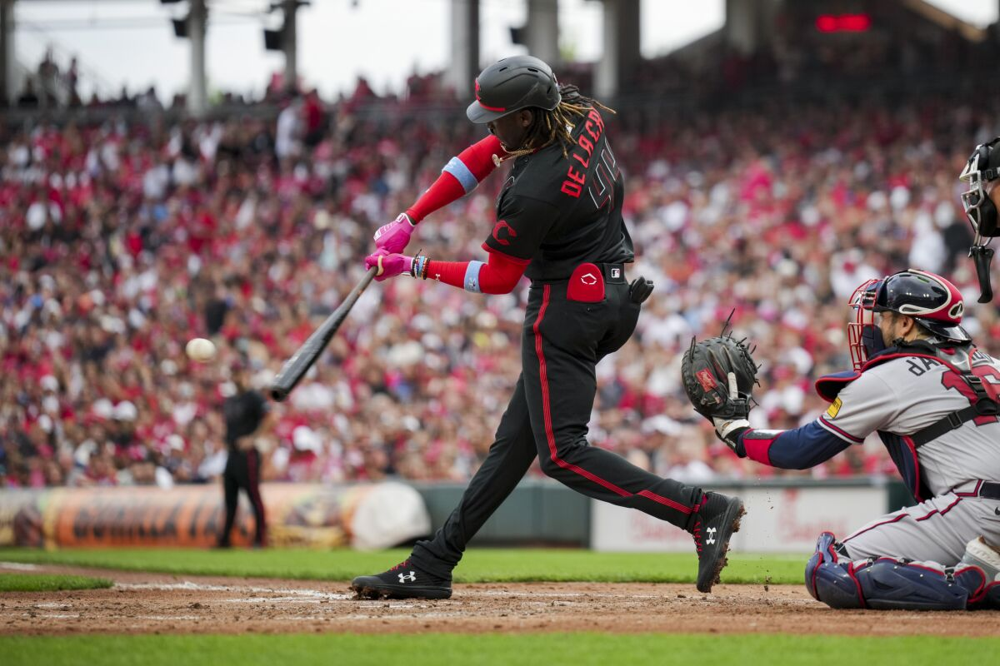

In this project, I pulled NFL data from Pro Football Reference using a Python script, and visualized scoring insights using PowerBI. This data is from the 2024-2025 NFL Regular Season. The dashboard preview is available in the README.


In this project, I downloaded a College Basketball dataset from Kaggle. I used this data to create insightful visualizations in Tableau. These visualizations truly analyze team and conference level success over the years in March Madness. The visualizations include a box-and-whisker plot looking at Adjusted Offensive Effeciency by Tournament Round, BARTHAG by Year line chart, Efficiency Trade-off Matrix, and Overperformance heatmap.

In this project, I pulled data from Baseball Savant into Microsoft Access. I created SQL queries to drive further insights into each team's offensive performance. I took these queries and visualized them in PowerBI. The dashboard preview is available in the README. This data was pulled in June 2025.